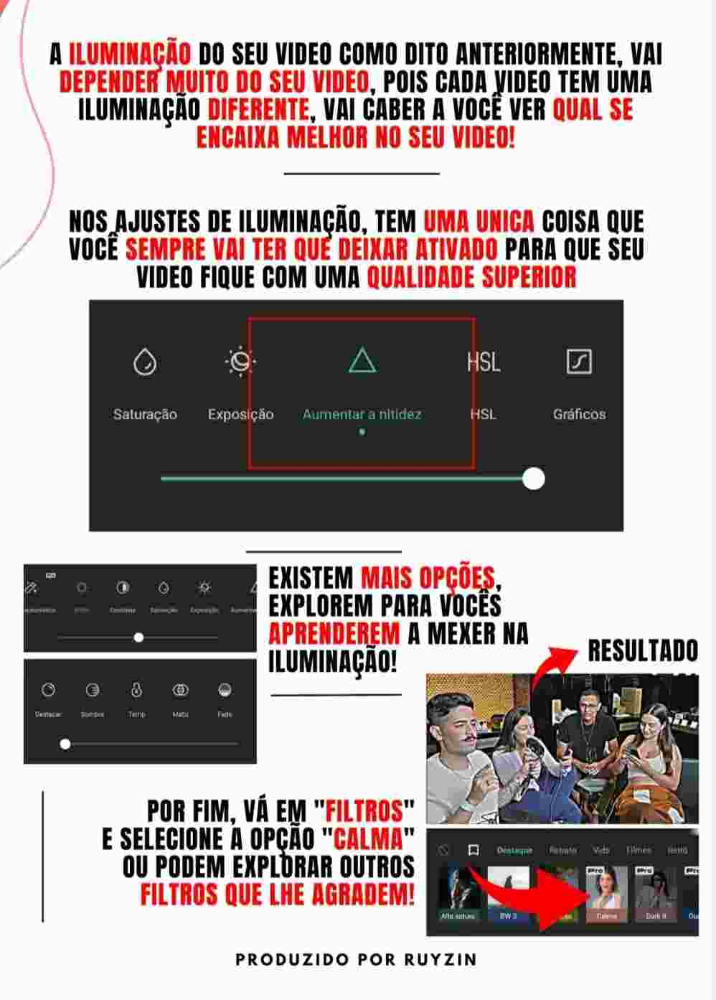
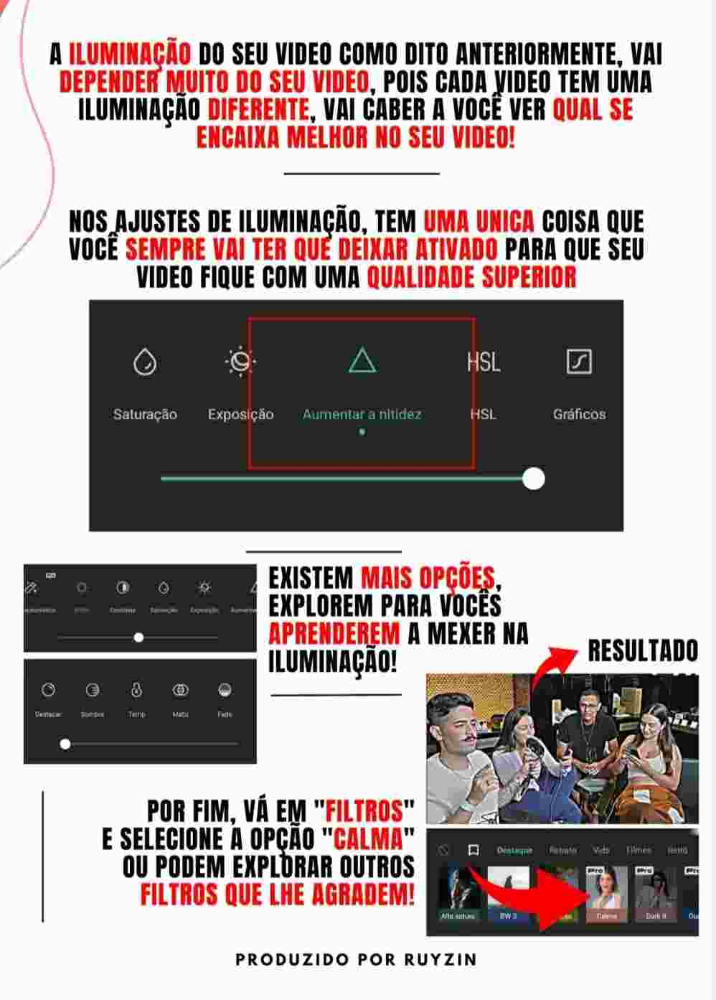

Histórico Profissional

Autônomo
Cargo: Social Mídia
Período: 1 ano e 2 meses
Experiência Exercida: Criação de designs para publicidade, edição de vídeo, criação de copywriting, gerenciamento de redes sociais, gestão de trafégo pago e orgânico, vendas online, desenvolvimento de estratégias de marketing digital, email marketing, pesquisas de mercado.
LaBios 3D
Cargo: Designer UX e UI
Período: 1 ano
Experiência Exercida: Criação e elaboração de designs, auxílio no desenvolvimento do site web, elaboração de wireframes, métodos ágeis (scrum), criação de modelos 2D, apresentação do projeto em escolas, pesquisas de mercado.

Hotel Montanhês
Cargo: Recepcionista
Período: 3 meses
Experiência Exercida: Criação diária de planilhas no excel para organização de clientes, atendimento ao cliente, administração financeira, gerenciamento de pagamentos, impressão de faturas, atendimento por telefone, vendas no local.
Última atualização 05/03/2024 às 12h11min


 
